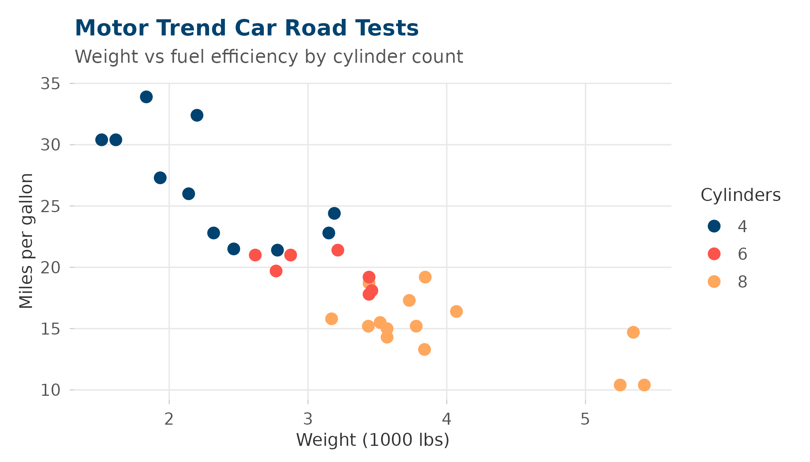
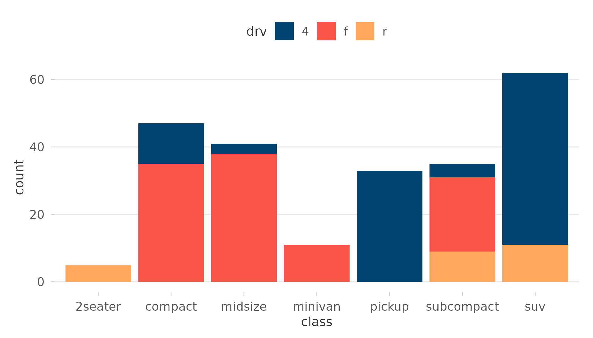
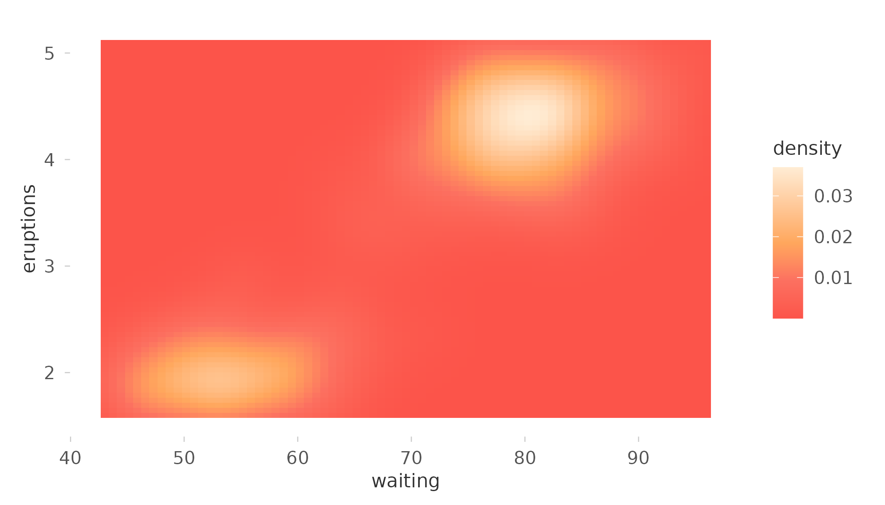

The circadia package provides the shared visual
identity for the Circadia Lab R ecosystem. It ships five colour
palettes, a ggplot2 theme, and discrete/continuous scale
functions that can be dropped into any plot across zeitR,
slumbR, tallieR, or syncR.
Palettes
Retrieve any palette by name with
circadia_palette():
circadia_palettes() # list all available palettes
#> Available circadia palettes:
#> Qualitative:
#> main 8 colours
#> core 5 colours
#> Diverging:
#> diverging 9 colours
#> diverging_simple 7 colours
#> Sequential (complex):
#> blues 6 colours
#> warm 5 colours
#> Sequential (simple):
#> seq_blue 5 colours
#> seq_coral 5 colours
#> seq_amber 5 colours
#> seq_ochre 5 colours
circadia_palette() # main (6 colours, default)
#> deep_blue coral_red amber ochre antique_white
#> "#014370" "#FC544A" "#FFA75D" "#C8860A" "#FFECD4"
#> mid_blue steel_blue pale_teal
#> "#1B6799" "#4A9BBF" "#9BDFE2"
circadia_palette("core") # compact 4-colour subset
#> deep_blue coral_red amber ochre antique_white
#> "#014370" "#FC544A" "#FFA75D" "#C8860A" "#FFECD4"
circadia_palette("blues", n = 4)
#> [1] "#014370" "#1B6799" "#4A9BBF" "#7FB5C8"All palettes support reverse = TRUE and sub-setting via
n:
circadia_palette("diverging", reverse = TRUE)
#> [1] "#FC544A" "#FC7060" "#FFA75D" "#FFC99A" "#FFECD4" "#9BDFE2" "#4A9BBF"
#> [8] "#1B6799" "#014370"Domain colours
domain_colour_for() maps data domains to their brand
colour — useful when annotating panels by data type:
domain_colour_for("actigraphy")
#> actigraphy
#> "#014370"
domain_colour_for("sleep")
#> sleep
#> "#1B6799"
domain_colour_for("questionnaire")
#> questionnaire
#> "#FFA75D"The theme_circadia() theme
Apply theme_circadia() to any ggplot2
plot:
ggplot(mtcars, aes(wt, mpg, colour = factor(cyl))) +
geom_point(size = 3) +
labs(
title = "Motor Trend Car Road Tests",
subtitle = "Weight vs fuel efficiency by cylinder count",
colour = "Cylinders",
x = "Weight (1000 lbs)", y = "Miles per gallon"
) +
scale_colour_circadia() +
theme_circadia()
The grid argument controls which gridlines are
shown:
ggplot(mpg, aes(class, fill = drv)) +
geom_bar() +
scale_fill_circadia() +
theme_circadia(grid = "y", legend_position = "top")
Continuous scales
For continuous data use scale_fill_circadia_c() or
scale_colour_circadia_c(). The "diverging"
palette suits centred data; "blues" or "warm"
suit unipolar data.
ggplot(faithfuld, aes(waiting, eruptions, fill = density)) +
geom_tile() +
scale_fill_circadia_c("warm") +
theme_circadia(grid = "none")